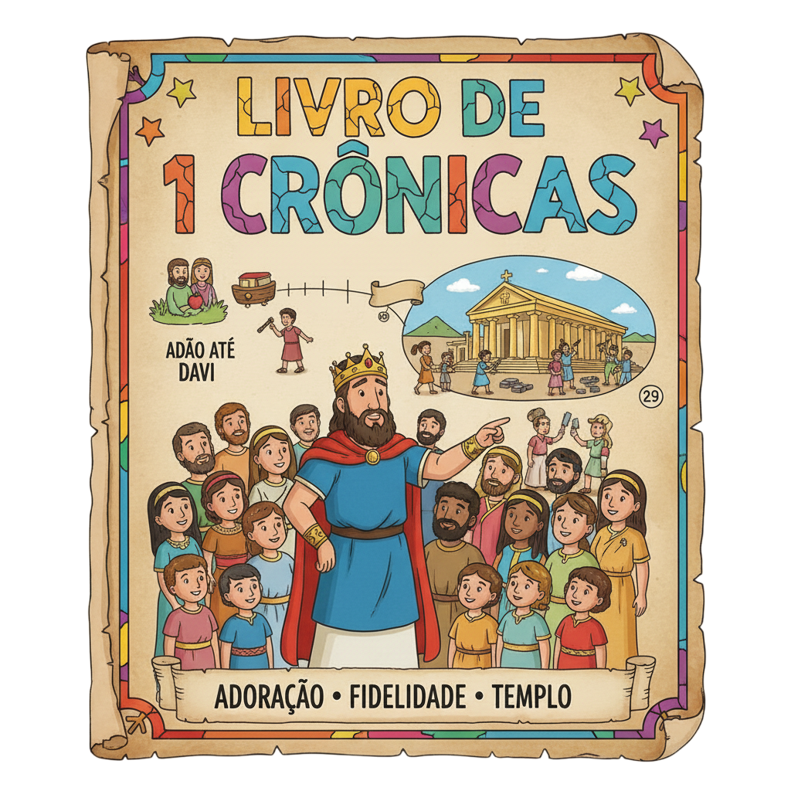
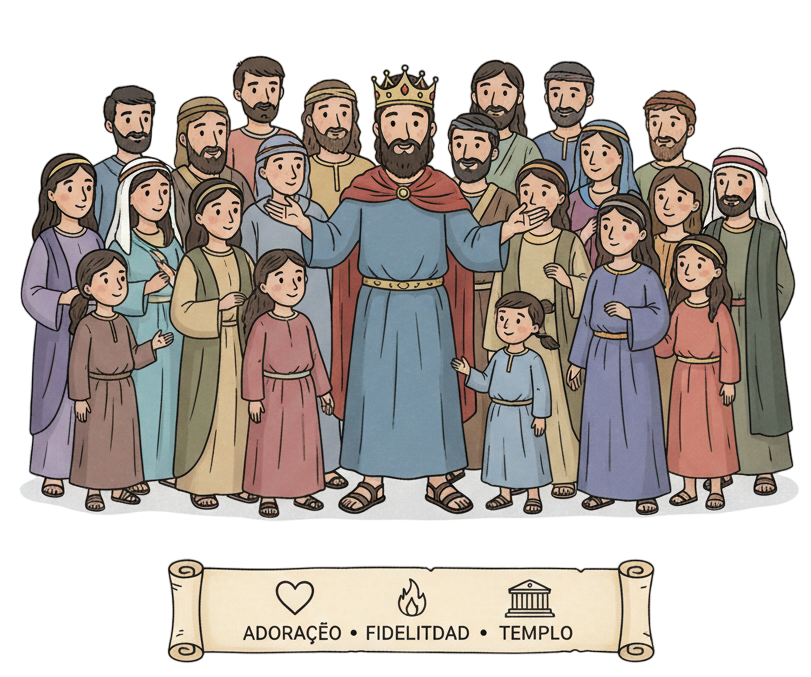

Adoração, Memória e o Preparo do Templo — Um Resumo Visual para Crianças
Os primeiros 9 capítulos são listas de nomes — de Adão até Davi. Parece chato, mas cada nome é uma pessoa que Deus conheceu e amou! Para os judeus voltando do exílio na Babilônia, esses nomes provavam: "Você pertence a essa história. Você não foi esquecido."
Davi quis construir o Templo — mas Deus disse não, pois ele era homem de guerra. Em vez de reclamar, Davi passou anos preparando tudo: toneladas de ouro, prata, madeira, pedras, e planos detalhados. Servir nem sempre é fazer; às vezes é preparar o caminho para outros.
Davi não organizou só material para o Templo — organizou o louvor! Criou times de músicos, definiu escalas de sacerdotes, compôs cânticos. Para Davi, adorar a Deus bem era tão sério quanto construir bem. O louvor não é improviso — é serviço dedicado!
"Tua é, Senhor, a grandeza, o poder, a glória, a vitória e a majestade. Tudo o que há nos céus e na terra é teu."
— 1 Crônicas 29:11
Essa foi a oração de Davi quando o povo ofereceu tudo para a construção do Templo. Davi não disse "olha o que demos a Deus!" — disse "tudo que temos já era Seu!" Jesus usou parte dessa oração no Pai Nosso: "teu é o reino, o poder e a glória."
Quando damos a Deus, estamos devolvendo o que já era Dele!
Toda grandeza, poder e glória pertencem a Deus!
Adorar é reconhecer quem Deus é — não só pedir coisas!

O herói de 1 Crônicas. Não pode construir o Templo, mas preparou tudo com amor: toneladas de ouro e prata, plantas detalhadas, músicos treinados, e a oração mais bela da Bíblia antes de morrer.
Davi organizou 4.000 músicos em times de adoração. Os 288 mais habilidosos eram especialistas treinados. Asafe era o maestro principal — e seus Salmos (Sl 50 e 73–83) ainda cantamos hoje na Igreja!
O filho destinado a construir o Templo. Davi lhe disse: "Você fará o que eu não pude." Salomão recebeu os planos, o ouro, a prata, a madeira — tudo que Davi havia preparado com amor por anos.
Nove capítulos de listas de nomes — de Adão até as famílias que voltaram do exílio. Parece monótono, mas era uma declaração poderosa: "Deus se lembrou de cada geração!" Para o povo que perdeu tudo, saber seu nome estava escrito era esperança.
Davi foi coroado rei com todo o apoio das tribos. Depois buscou a Arca da Aliança para trazê-la a Jerusalém — com música, dança e festa! Deus também fez a Aliança Davídica: um descendente de Davi reinaria para sempre.
Deus disse a Davi que ele não poderia construir o Templo por ter sido homem de guerra. Mas Davi não ficou amargo — preparou 3.400 toneladas de ouro, 34.000 toneladas de prata, bronze, cedro, pedras preciosas e os planos completos para Salomão.
No último capítulo, o povo ofertou generosamente para o Templo — e Davi orou uma das orações mais belas da Bíblia. Reconheceu que tudo veio de Deus, ungiu Salomão como rei, e morreu em "boa velhice, cheio de dias, riqueza e glória."
🎵 288 músicos especializados no Templo!
Davi organizou 4.000 músicos, e 288 eram considerados "habilidosos" — treinados especificamente para o louvor ao Senhor (1 Cr 25:7). Era o maior e mais bem organizado time de worship da história antiga!
💰 A maior oferta da história bíblica!
Davi preparou cerca de 3.400 toneladas de ouro e 34.000 toneladas de prata para o Templo (1 Cr 22:14). Em valores atuais, seria centenas de bilhões de reais. E o povo ainda doou mais! Quando o coração ama, não mede o preço.
✝️ A oração de Davi está no Pai Nosso!
Jesus terminou o Pai Nosso com: "teu é o reino, o poder e a glória para sempre" (Mt 6:13). Essa doxologia vem direto da oração de Davi em 1 Cr 29:11! Jesus aprendeu a orar com as palavras do seu antepassado.
Deus se lembrou do nome de cada pessoa nas genealogias. Como você se sente sabendo que Deus também conhece o seu nome — e que você faz parte da história que Ele está escrevendo?
Davi preparou o Templo que ele mesmo nunca usou — para a geração seguinte. Você consegue pensar em algo que pode fazer hoje para abençoar outras pessoas mais tarde?
Davi organizou o louvor com tanto cuidado quanto o ouro para o Templo. O que isso te diz sobre como devemos tratar o momento de adorar a Deus na nossa vida?
Leia 1 Crônicas 29:10-13 em voz alta como uma oração. Depois ore com suas próprias palavras dizendo: "Tudo o que tenho veio de Ti, Senhor — e é Teu!"
Escolha uma música de louvor para cantar ou ouvir antes de dormir esta semana. Assim como Davi organizou o louvor, você também pode criar seu momento especial com Deus!
Pense em algo que você pode preparar ou fazer esta semana para abençoar alguém — mesmo que você não veja o resultado. Sirva como Davi: sem precisar de reconhecimento!
Trilho Kids | Desenvolvido com ❤️ para crianças © 2025